Welcome!!!
Discover the Unique World of Milano Models!
Alternative Modeling
Explore non-traditional approaches, techniques, and creativity in modeling. Embrace uniqueness!
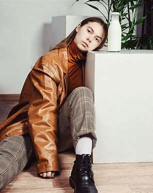 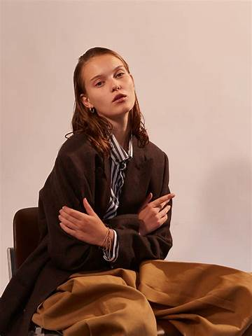 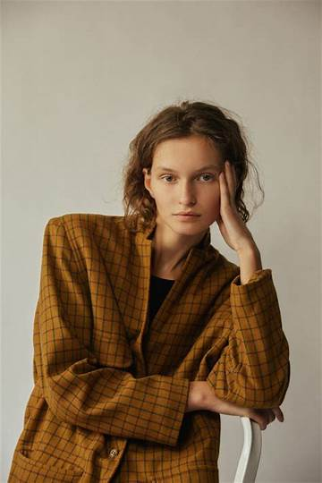Commercial Modelling
The representation and promotion of products, services, or brands through visual means, typically in a relatable and mainstream style, with the aim of appealing to a broad consumer audience.


Editorial Modelling
The practice of showcasing and promoting fashion, beauty, and lifestyle products through the creation of visually compelling and narrative-driven content in the form of photographs or videos, typically for publication in magazines, online platforms, or other editorial outlets.
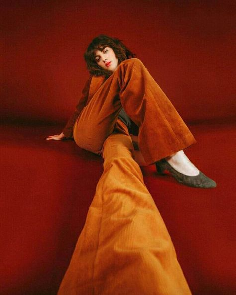 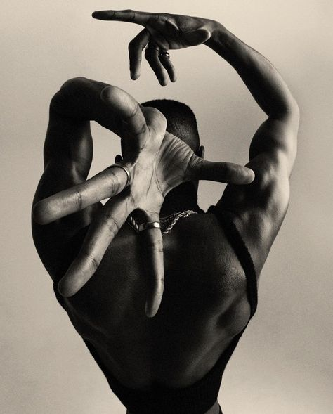 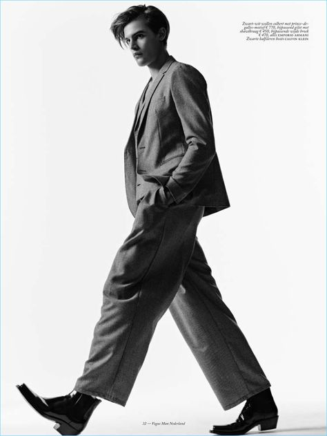Fitness Modelling
Form of modeling that emphasizes a toned and athletic physique, showcasing physical fitness, health, and well-being through various poses and activities.
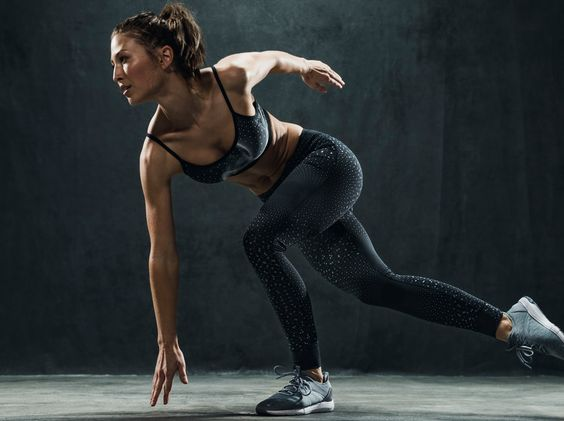 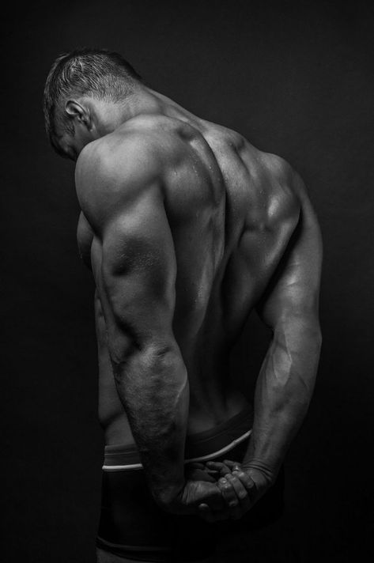 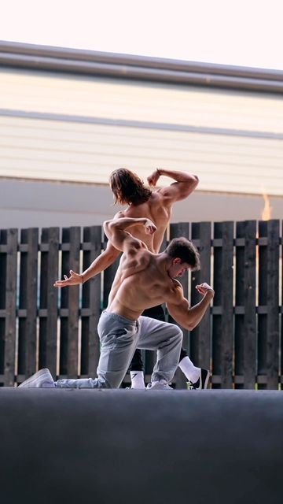Runnway Modelling
Showcasing and presenting fashion garments and accessories by models walking down a designated runway or platform during a fashion show, emphasizing grace, poise, and the effective display of the designer's creations.
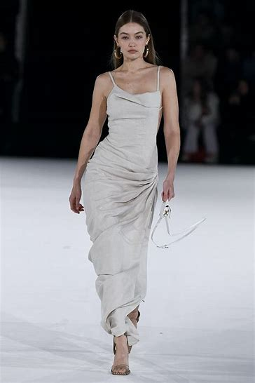 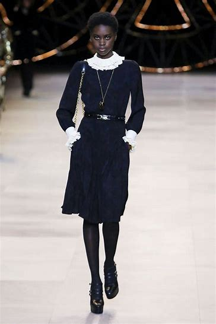 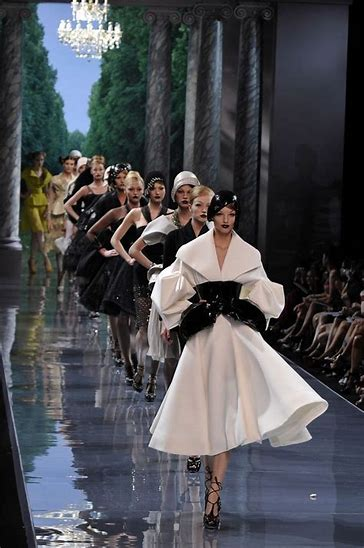